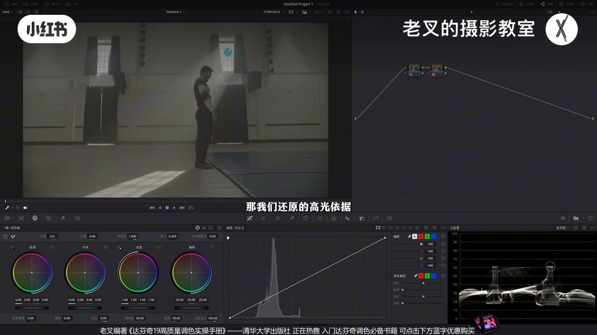
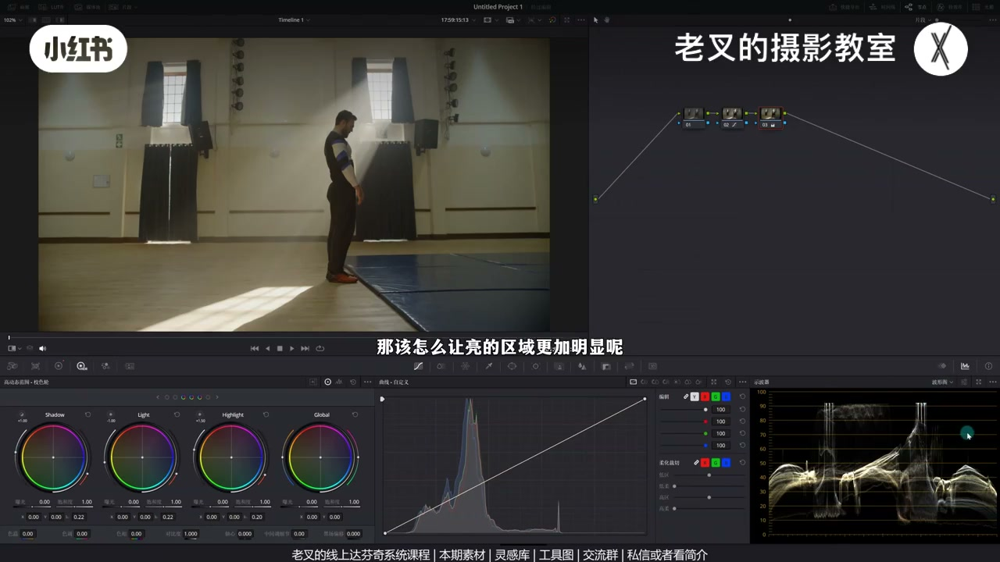
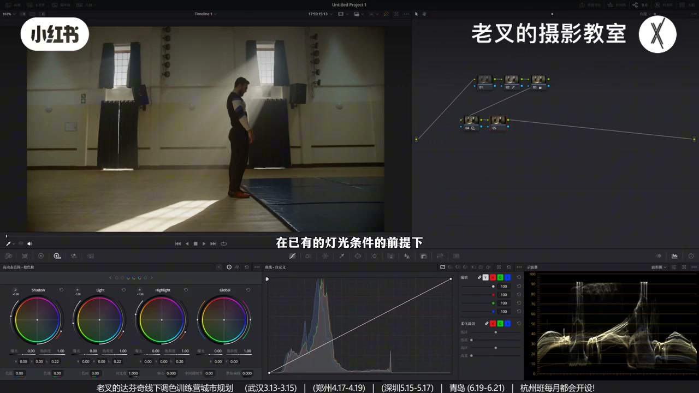
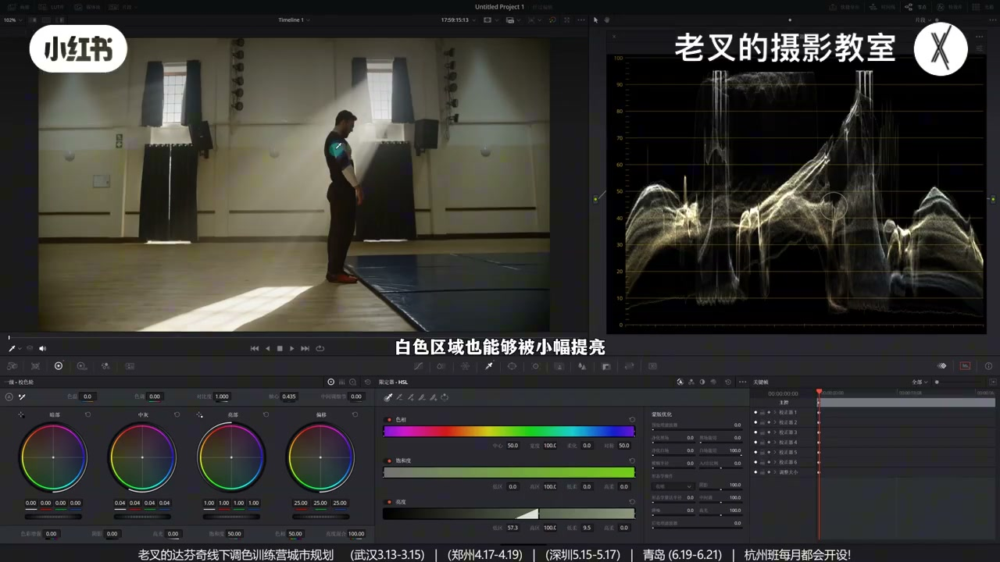
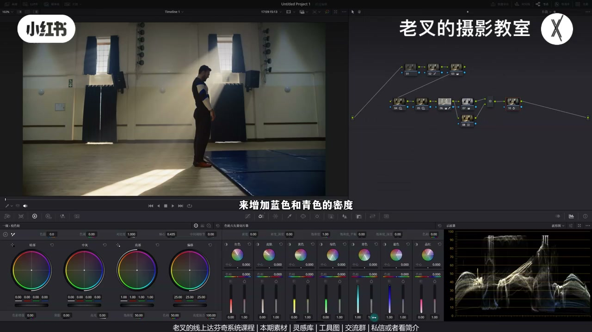

内容要点
老叉用「有明确过曝光源」的夜景人像讲调色分析：还原以光源高光为准拉到波形90%以上、暗部约10%，人物暗才是该场景的真实。精细化时用暗衬亮（压 Shadow/Light、抬 Highlight），提亮人物靠强化受光面而非抬暗部；中灰用限定器小幅提。颜色上外部节点给暗部加蓝并并行纠墙，再切片压艳，思路简单——先知道要干嘛。
知识结构
明确光源必过曝→高光依据拉到90%+，暗约10%；人物暗才对。
高光已够亮：压 Shadow（可微压 Light）+ 抬 Highlight，聚焦高光区。
提亮人物＝强化受光（抬 Light）；整块抬暗部必发灰；背光本该暗。
Shift+H 选中灰/灰面，中灰轮小幅提：白衣亮且暗面不发灰。
外部节点加蓝+并行纠墙；色相切片增蓝青密度降饱和；柔和对比度控刺眼高光。
调色底层是「场景该怎样」的分析：还原跟真实光源与明暗逻辑；精细化用分区与 HDR 让该亮更显、该暗更稳；不要为调色而调色。提亮优先强化受光，限定器解决中灰，颜色按曝光区域落点。
00:00-00:40还原：以过曝光源为高光依据
拿到素材先形成相对合理的思路。本例场景有明确光源，这类光一定过曝，还原高光依据就以它为准：在波形里拉到约90%以上——人眼对超过90%亮度的判断力会急速下降。暗部大约落在10%左右，再加一点饱和即完成还原。
不能为了「人物更清楚」把曝光拉得特别高；这种场景人物暗才是应该的。

00:40-01:36精细化：压暗衬托已够亮的高光
若还原已够可停；还想强化，先明确：能看见人是因为他被光照到，光照区要强化。高光已很亮，再提没意义，应用压暗一部分让高光更显。
新节点：降 Shadow 曝光；为避免高光与暗部过渡生硬，可小幅降 Light；再略抬 Highlight 保护高光。视线更聚焦高光区。

01:36-02:28提亮人物：强化受光，别整块抬暗部
觉得人物太黑时，提亮暗部一定发灰。调色时常把自己当灯光师（自然光就当「上帝」）：已有灯条件下只能「把太阳提亮」——即强化高光受光，略抬 Light，人物自然突出。
背光面本该暗。非要提亮又不能靠 Shadow 时，只能动中灰区（下节限定器）。素材可私信或看简介加入分享平台免费领取。

02:28-03:04限定器选出中灰区小幅提亮
高光已提、暗部提会发灰，能提的只剩中灰。用限定器亮度选项：Shift+H 打开突出显示，提高低区并略加低柔，选出人物受光面与灰面，再用中灰轮小幅提曝光。
白衣等区域会被小幅提亮且不影响暗面，故不发灰。曝光到此可收，开始做颜色。

03:04-04:43暗部加蓝：外部节点 + 并行纠偏 + 切片压艳
暗部缺一点蓝会导致颜色过于一致。全局加蓝再并行找回暖，在本片行不通——暖色曝光低、色相差太小。六号限定器已选中中灰与亮面，故 Alt/Option+O 建外部节点，选区自然是暗部，针对性加蓝。
暗墙色相会怪：并行节点把墙的色相与饱和略拉回。蓝偏艳则后节点用色相切片增蓝青密度并略降饱和。刺眼高光可上柔和对比度，整体曝光反差少动、高光略灰。思路简单：知道要干嘛；想不出或没必要就别做。

完整转录（197段）
以下文本由 Whisper medium 模型自动转录，可能存在少量识别误差，已尽可能修正。
拿到素材我们该如何分析并形成一个相对合理的调色思路
以这个素材为例
还原的时候我们就该思考
这个场景中有明确的光源
而这种情况下的光源它一定是过曝的
既然是过曝的
那我们还原的高光依据就可以以这一部分为准
将它在波形图中拉到90%以上
人眼对于亮度超过90%的内容判断能力会急速下降
因此我们可以简单的测试一下
我们把这个光源的光源
也就是把高光差不多拉到这个位置
暗不能让它在10%左右即可
然后在3号节点加一点点饱和度
这样我们就做好了还原
你不能把这个画面在还原的时候
把曝光拉得特别高
你比如说想要让人物更亮更清楚
对于这种场景人物暗才是应该的
再往下就是精细化调整
这也是大多数朋友会遇到问题的阶段
我们要如何强化这个场景
当然如果你觉得这个结果已经不够了
那我们就直接把高光拉到这个位置
然后再往下就是精细化调整
这也是大多数朋友会遇到问题的阶段
如果你觉得这个结果已经不够了
那就到此为止
如果你还想调我们该怎么想呢
首先我们要明确
我们能看到这个人是因为他被光照射到
那因此光照区域一定是重要的
也就是需要被强化的区域
可是目前高光已经很亮了
再提亮它也没啥意义
那该怎么让亮的区域更加明显呢
是不是可以通过一按旗一部分来让高光更加明显
因此我们可以再建立一个节点拉到第二排
通过降低Shadow Celeron的曝光来实现这一点
同时我们也可以为了避免
高光与暗部之间的过渡太生硬
也可以选择小幅降低点Light Celeron的曝光
来产生更多的灰面
那可是降低Light Celeron的曝光
会导致高光曝光也降低
因此我们还需要稍微再提高点Highlight Celeron的曝光
来保护下高光
不会受到太多的影响
那这样我们就可以让视线中心更加聚焦于高光区域
那此时你说
哎呀我觉得人物还是太黑了
那我们该如何提亮人物呢
我们如果是提亮暗部呢
这样做一定会让画面发灰
我们仔细想
还是刚刚那个问题
为什么我们能看见这个人
是因为他被光照到对吧
我们在做调色的时候
要时常将自己带入到灯光师的这个身份
如果说是自然光
那就把自己当上帝
你想要让这个人物强化提亮
在已有的灯光条件的前提下
你能怎么做
是不是只能将太阳给提亮
因此呢我们要提亮人物的方式
应该是强化高光区域
也就是稍微提高点Light Celeron的曝光
这样可以让受光区域更加明显
那自然人物就更加突出了
至于人物的背光面
他本该就这么爱
但是啊
如果你还是非要提亮他
那在不能使用Shadow Celeron的建议下
该怎么做呢
素材我也传到了线上分享平台
大家可以私信
或者看我剪辑就可以加入
聆取过去之后
大家可以一起感受一下
那这个当然是免费的
还有达芬基线上系统课程
和线下调色训练营
回到操作
这里呢有个小技巧啊
我们明确了操作是提亮对吧
而高光呢已经提亮了
暗部提亮会发挥
那我们能提亮的区域就只有中晖区
所以我们可以通过限定器的亮度选项
来选出中晖区
可以先按住Shift加H
打开突出显示
然后提高低区
同时我们稍微增加一点低柔
让他的过渡能够更加顺滑
这样呢我们就能选出
人物的受光面以及灰面
然后我们再小幅提高
中晖区域的曝光
我这里选择的是中晖四轮
通过这个方式呢
你会发现人物的手
也就是这个衣服白色区域
也能够被小幅提亮
并且不会影响到暗面
所以他不会发挥
那么曝光我们就调到这里
接下来就可以开始做颜色
我个人是觉得这个画面
暗部缺了一点点蓝
导致场景颜色过于一致
没有层次
那该怎么让画面加蓝
用之前的并行节点方式来嘛
也就是先建立一个节点
给画面整体加蓝
然后用并行节点的
下面这个节点中
把暖的部分找回来
这个行为对于这个画面
是无法实现的
因为这些暖色的曝光
本就比较低
而且色相之间的差距
过于小了
这时候我们再看回到
六号节点
也就是限定器这个节点
我们再次明确一下
我们要做的行为
是给暗部加蓝
对不对
而六号节点
已经利用限定器
选中了中灰和亮面
所以我们只需要
按住out或者是option加O
建立一个外部节点
那么这个七号节点的
选区自然就是暗部区
我们可以给它稍微加点蓝
这样的加蓝会更有针对性
可是我们看画面
这些墙壁还是有
不少区域处在暗面的
所以他们一定会受到影响
比如说这个墙壁
它的颜色
它的色相都变得
有点怪了对吧
所以这个时候
我们可以建立一个
并行节点
来把暗面这些墙
它的色相和浮豪度
给它稍微拉回来一点
那此时我们就让画面
按照曝光区域来呈现了
可是这个蓝
我觉得有点艳了
不用回去调
只要在后面再加个节点
用色轮60样切片工具
来增加蓝色和青色的密度
稍微降低点饱和度就行了
最后我觉得
可以来个柔和对比度
因为你的画面中
如果出现了
特别刺眼的高光时
利用这个曲线
可以保证画面
整体曝光和反差
不受到太多影响的前提下
还能让高光稍微灰一点
不至于它特别刺眼
调到这里呢
我觉得就差不多了
调色思路你会发现
其实很简单啊
用到的节点也不是很多
重点是你要知道
你要干嘛
如果说你想不出
或者觉得没必要
那就不用做
不要为了调色而调色
素材大家记得
领取过去之后练练手
讲到这里
如果觉得你有帮助的话
还希望多多赞联
好了 这期就到这里
886